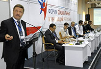

Воронежский онкоцентр был признан одним из лучших социальных проектов страны Опыт частно-государственного партнёрства Межрегионального центра ранней диагностики и лечения онкозаболеваний не имеет аналогов в России Единодушного признания экспертов воронежские медики добились в рамках первого в истории страны Форума социальных инноваций регионов, который проходил в Омске с 5 по 6 июня.
В этот список ожидаемо попал проект воронежского государственно-частного партнерства между частным Межрегиональным центром ранней диагностики и лечения онкозаболеваний и государственным здравоохранением области. Опыт такого партнерства в здравоохранении был признан успешным и по мнению министра здравоохранения Вероники Скворцовой — уникальным явлением для страны, опытом, который рекомендовано распространять в федеральном масштабе.
Напомним, около двух лет назад в нашем регионе был запущен пилотный проект для решения проблемы обеспечения онкологических пациентов области теми видами высокотехнологичной специализированной медицинской помощи, которые ранее были недоступны. Поскольку Межрегиональный центр ранней диагностики и лечения онкозаболеваний был оснащен оборудованием на основе передовых достижений медицинской науки, таким оборудованием не располагали государственные медучреждения, правительством Воронежской области были выделены дополнительные финансовые средства для закупки столь необходимых медицинских услуг.
Воронежский онкоцентр был признан одним из лучших социальных проектов страны Опыт частно-государственного партнёрства Межрегионального центра ранней диагностики и лечения онкозаболеваний не имеет аналогов в России Единодушного признания экспертов воронежские медики добились в рамках первого в истории страны Форума социальных инноваций регионов, который проходил в Омске с 5 по 6 июня.
Николай Чевардов отмечает, что в нынешнем году партнёрство получило дальнейшее развитие. Центр включен в список медучреждений, которые осуществляют деятельность в системе ОМС. Причём получить высокотехнологичную медпомощь в части ПЭТ/КТ диагностики по полису ОМС могут не только жители Воронежской области, но и соседних регионов.